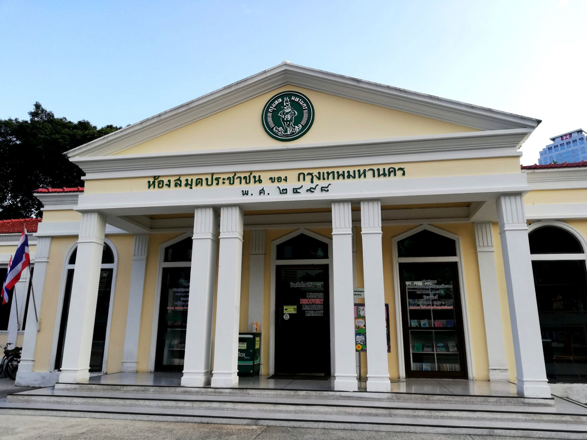

ห้องสมุดเพื่อการเรียนรู้สวนลุมพินี

ห้องสมุดเพื่อการเรียนรู้สวนลุมพินี
ห้องสมุดเพื่อการเรียนรู้สวนลุมพินี” ที่นี่เป็นห้องสมุดที่เหมาะสำหรับคนที่อยากมาอ่านหนังสือแบบชิล ๆ อ่านหนังสือหรือทำงานเสร็จแล้วเดินไปเล่นรอบสวนลุมพินีแบบชิล ๆ ส่วนใหญ่ห้องสมุดแห่งนี้จะจัดพื้นที่สำหรับมานั่งอ่านคนเดียว ดังนั้นใครที่ไม่อยากชวนเพื่อนหรืออยากมานั่งพักผ่อนคนเดียว ลองมาที่ห้องสมุดแห่งนี้แล้วจะติดใจ ส่วนโซนหนังสือมีให้เลือกหลายภาษา ทั้งภาษาไทยและภาษาต่างประเทศแบบจัดเต็ม อ่านต่อได้ที่
ห้องสมุดเพื่อการเรียนรู้สวนลุมพินี” ที่นี่เป็นห้องสมุดที่เหมาะสำหรับคนที่อยากมาอ่านหนังสือแบบชิล ๆ อ่านหนังสือหรือทำงานเสร็จแล้วเดินไปเล่นรอบสวนลุมพินีแบบชิล ๆ ส่วนใหญ่ห้องสมุดแห่งนี้จะจัดพื้นที่สำหรับมานั่งอ่านคนเดียว ดังนั้นใครที่ไม่อยากชวนเพื่อนหรืออยากมานั่งพักผ่อนคนเดียว ลองมาที่ห้องสมุดแห่งนี้แล้วจะติดใจ ส่วนโซนหนังสือมีให้เลือกหลายภาษา ทั้งภาษาไทยและภาษาต่างประเทศแบบจัดเต็ม อ่านต่อได้ที่
การเดินทาง
การเดินทาง
รถไฟฟ้า BTS: ลงที่สถานีสุรศักดิ์ (Surasak) แล้วเดินต่อประมาณ 10 นาที
MRT (รถไฟฟ้าใต้ดิน): สถานีที่ใกล้ที่สุด: สถานีสวนลุมพินี (Lumphini Station)
รถประจำทาง: สาย 14, 48, 72, 514
ข้อมูลเพิ่มเติม
ที่ตั้ง: สวนลุมพินี, กรุงเทพมหานคร
เวลา: วัทุกวัน ตั้งแต่ 08:00 - 18:00 น.